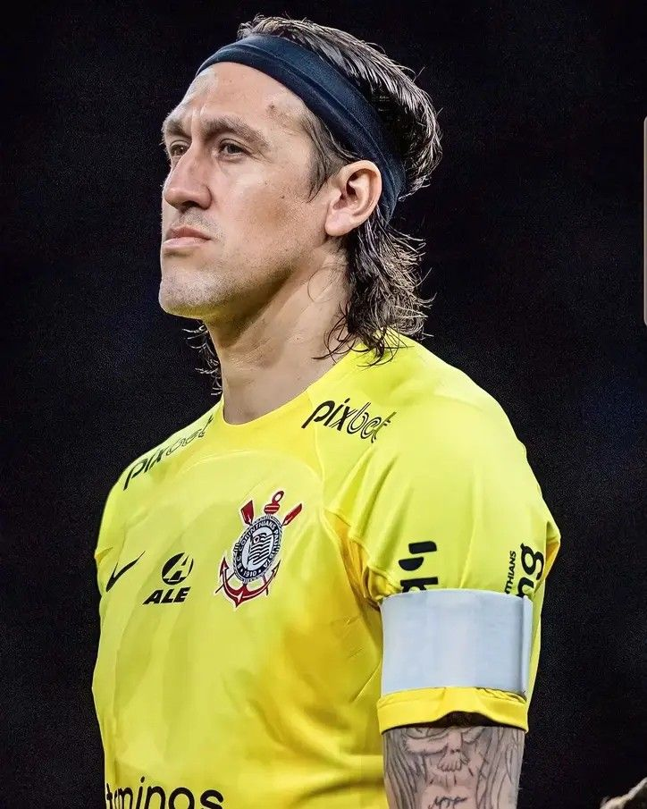
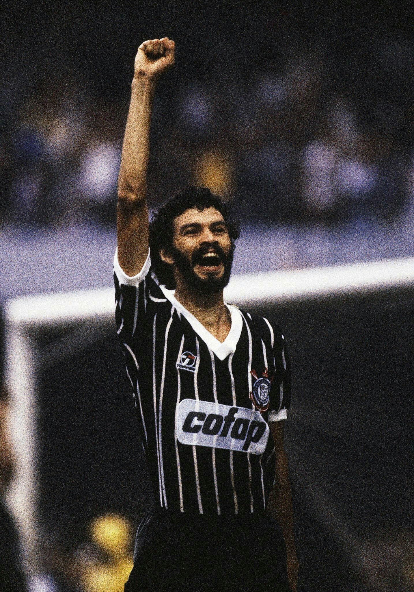

Sporte Club Corinthians Paulista
O Corinthians é um dos maiores clubes do Brasil, com uma torcida muito apaixonada.
Fundado em 1º de setembro de 1910 por operários no bairro Bom Retiro, em São Paulo, o Sport Club Corinthians Paulista nasceu para ser o "time do povo".

Principais Conquistas
- Mundial de Clubes (2000 e 2012)

- Copa Libertadores (2012)
- Campeonatos Brasileiros (1990, 1998, 1999, 2005, 2011, 2015 e 2017)

Jogadores Famosos
- Cássio

- Sócrates

- Ronaldo Fenômeno

Estádio
O estádio do Corinthians é a Neo Química Arena.